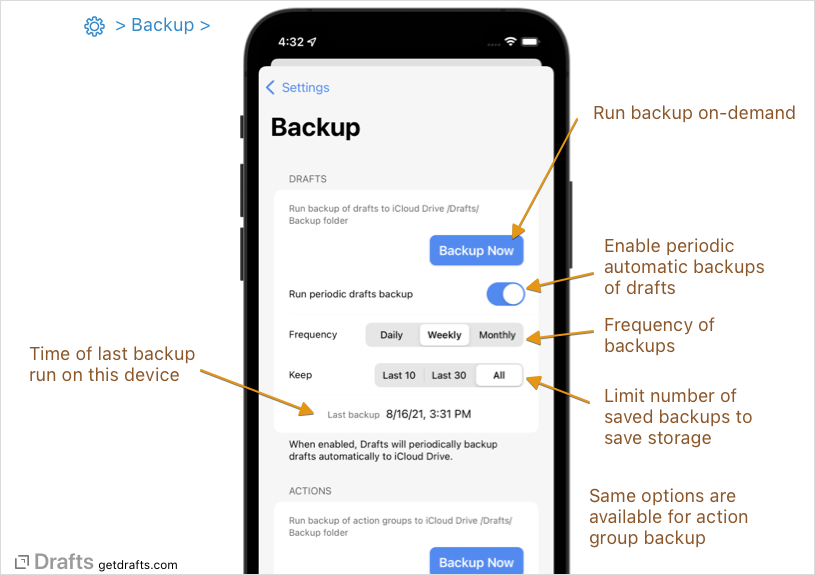
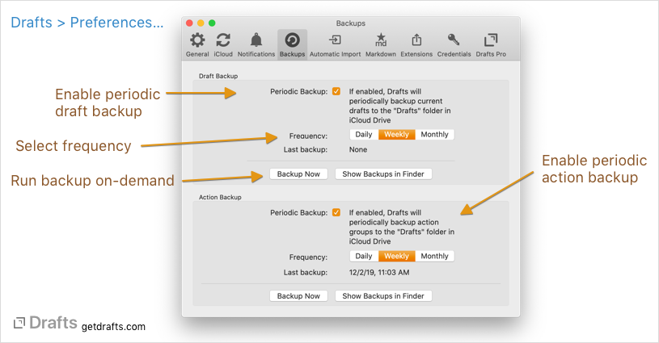
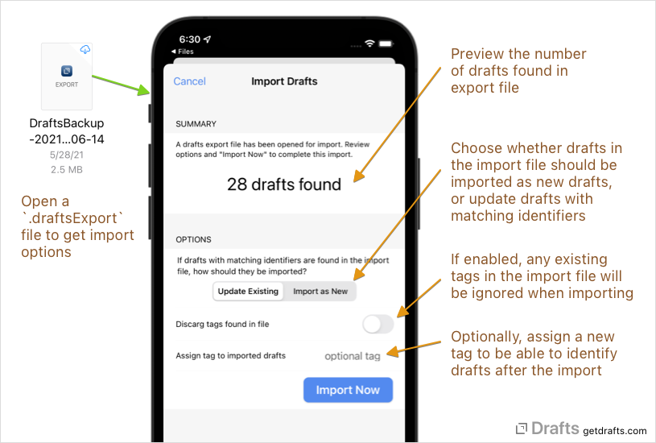

Backups
Table of Contents
Full Backups
Trash and Version History
Backups are for more substantial data loss issues. If you simply need to revert to a previous version of a draft, you can likely do that simply by accessing its version history. If you accidently delete a draft, it will be in the Trash folder for 30 days.
If you have enabled iCloud Sync Drafts is always storing data in the cloud, which serves as a backup if you lose a device or similar, but those only represent a snapshot of the current state of your Drafts data. Drafts can also create on-demand or automated periodic backups of drafts and action groups. These backups can be imported back into Drafts if needed.
 
To make a backup on-demand, or to enable periodic backups visit Settings > Storage > Backups (iOS) or File > Preferences > Backups (macOS).
Use the “Backup Now” button to run immediate backups, or enable periodic backups and select an interval to automatically backup your data to the Drafts/Backups folder in your iCloud Drive.
If periodic backups are enabled, for either drafts or action groups, these periodic backups will be created in the background when the selected interval has been exceeded. Exactly when those backups will be run depends on how often you launch and use Drafts.
Note: If you enable periodic backups, it is generally only needed on one of your devices. For example, if you use Drafts most often on your iPhone, you might enable periodic backup on that device - and NOT on your iPad.
Backup settings also include options for how many backups you wish to keep. With this enable, Drafts will automatically clean up older backups to avoid using too much storage.
Partial Backups
Partial backups of sets of drafts can also be created at any time using the export tools in the draft list. Select the drafts you wish to export in the draft list, and:
- On iOS, use “Operations > Export” and export in the JSON format.
- On Mac, right-click on the selected drafts and select
Export > as JSONfrom the menu.
File Format
Backups are stored in files with the .draftsExport extension. Internally, the storage format in JSON, which can be used in other tools to work with backup files if needed.
Restoring Backups
Backup files can be reimported into Drafts. When importing a backup file, be sure to carefully select options in the import dialog to make sure the data is imported appropriately and you do not create duplicate data.

To restore a backup file:
- iOS: Browse to
iCloud Drive > Drafts > Backupsin the Files app, select the backup you wish to restore, and open the file. Drafts will launch and offer to import the file. - Mac: Browse to
iCloud Drive > Drafts > Backupsin the Finder, and double-click the backup you wish to restore.
You will be presented with an import options dialog, review these options before selecting “Import Now”:
Update Existing | Import as New: Choose whether all drafts in the backup file are imported as new drafts, or if drafts with matching identifiers are already in your installation will be updated to the version in the backup.
A Few Notes
- Drafts export files will have the “.draftsBackup” file extension. The content is encoded in JSON format. It you need to access only a specific draft from the backup, it is possible to open the back in a text editor and locate just specific information you need.
- Action Groups are backed up as individual files with “.draftsActionGroup” extensions. These are in a native compressed format, but can be re-imported into Drafts at any time.